Рецепти звідусіль —
план і список на тиждень
Надішліть посилання, відео або фото сторінки — решту зробить помічник.
Telegram Mini App · українською · працює на Silpo MCP
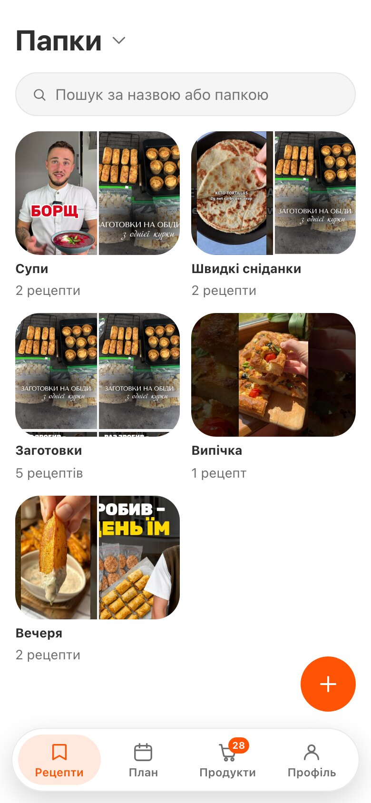
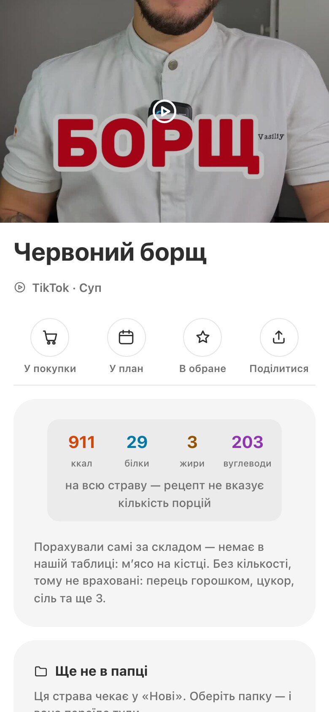
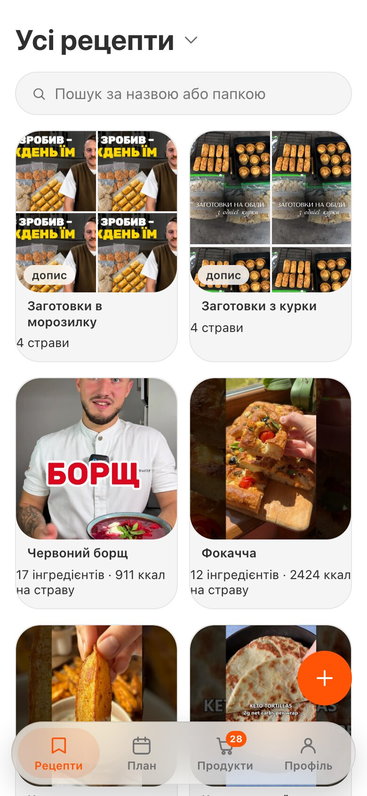
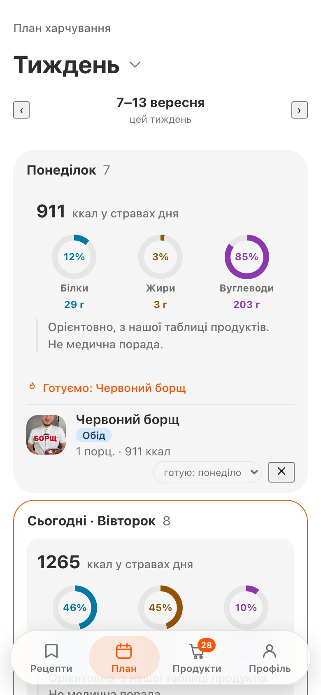
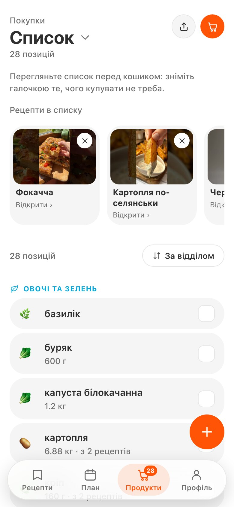
Проблема
Купуємо «про всяк випадок» —
викидаємо через тиждень
Як зазвичай
- У магазин — без списку
- Купуєте те, що вже є вдома
- Готуєте дві страви з п’яти
- Решта — у смітник
- У четвер знову «що на вечерю?»
Зі СмачноЄ
- Спочатку план на тиждень
- Список рахує все разом
- Знімаєте те, що вже вдома
- Купуєте рівно те, що приготуєте
- Вечеря вже вирішена
Від рецепта — до кошика
-
Збираєте
Одним повідомленням, звідки завгодно.
-
Плануєте
Страви по днях, калорії дня — одразу.
-
Один список
За відділами магазину, з сумарною вагою.
-
Купуєте
Зі списком у залі — або кошиком, який зібрав помічник.
Можливість 01
Рецепти звідусіль — одним повідомленням
Надішліть боту що завгодно — він прочитає й розкладе на інгредієнти з вагою, кроки та калорії.
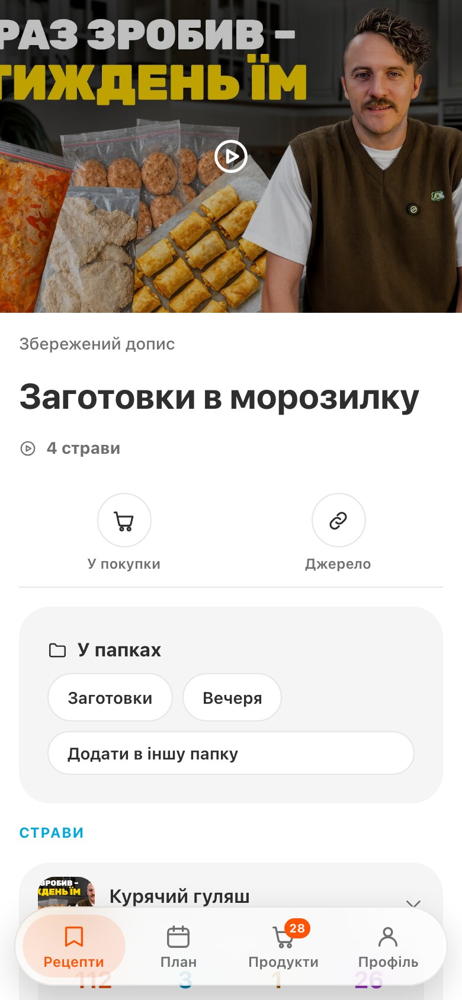
Зі шпаргалки бабусі
Рукописний рецепт — теж рецепт
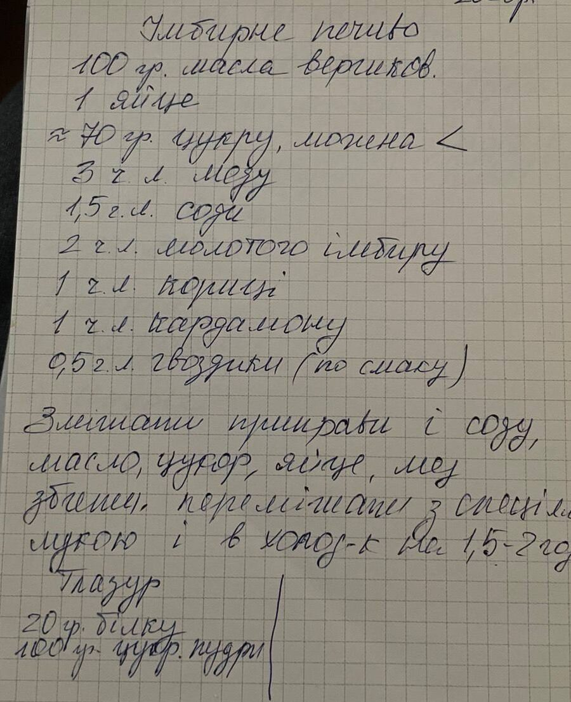
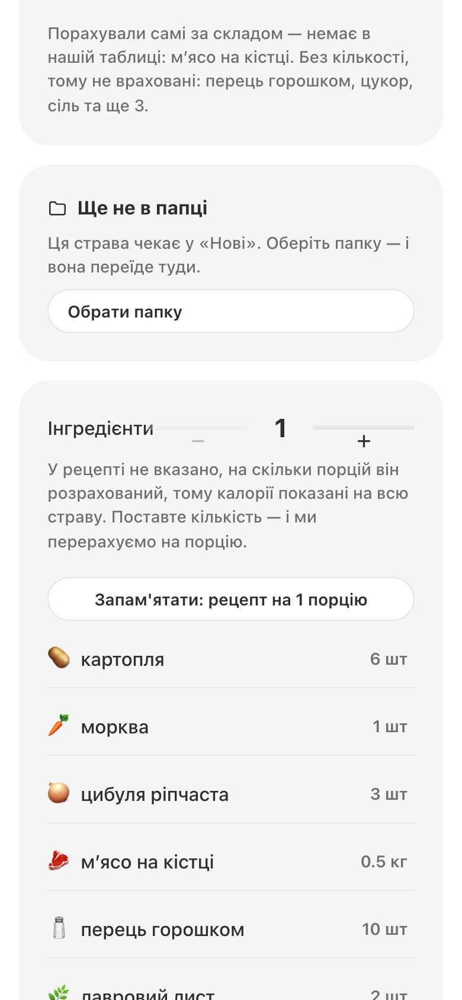
Одне посилання
Відео на тиждень заготовок — чотири рецепти
Можливість 02
Що зварити з того, що вже купили
СмачноЄ дивиться на ваші покупки в Сільпо й показує страви, які реально зібрати вже сьогодні.
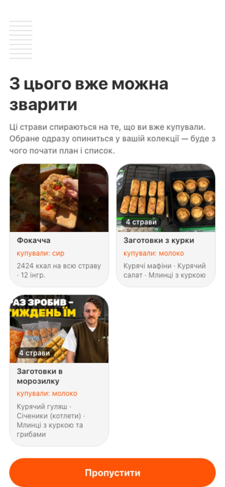
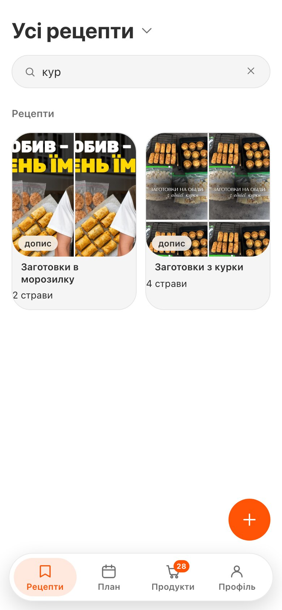
Можливість 03
Тиждень — і один список на всі страви
Рядок на інгредієнт із сумарною вагою, за відділами магазину. Візьміть із собою — або дайте помічнику зібрати кошик у вашому Сільпо.
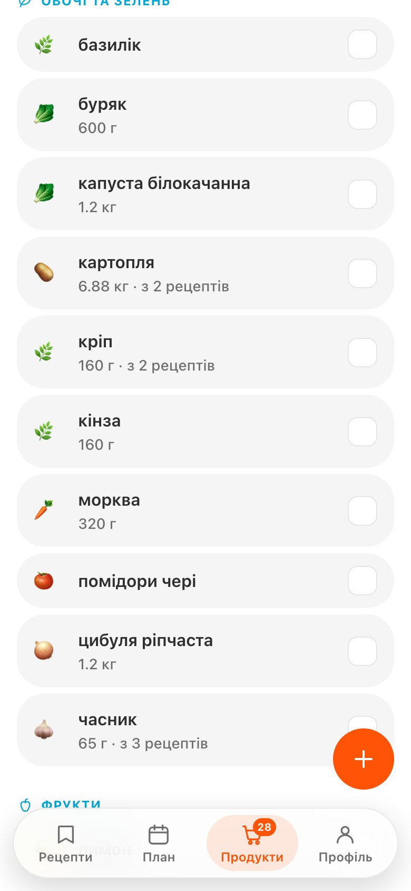
Можливість 04
Що зараз в акції — і що з цього зварити
Помічник сам дивиться знижки вашого магазину, звіряє їх із вашою колекцією та стежить за ціною. Платите ви.
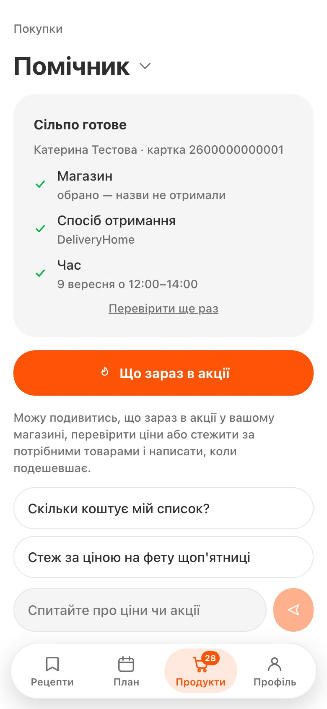
Можливість 05 · нове
Зніміть пачку на полиці — і побачте, що з неї приготувати
Помічник читає етикетку, питає полицю вашого магазину й перевіряє ваш кошик: скільки коштує, чи вже куплено, до якого з ваших рецептів підходить.
Не вигадує товар
Питає полицю. Не знайшли — скажемо, яку назву прочитали.
Не вигадує калорії
Цифри — від Сільпо. Чого немає, того не буде на екрані.
Ідеї — це ідеї
Підказки моделі підписані й не зберігаються як ваші рецепти.
Офіційний MCP «Сільпо»
Агент не описує кошик — він його збирає
«Збери кошик на цей тиждень»
silpo_get_my_profileхто гість, який магазинsilpo_get_loyalty_infoкартка й бонусиsilpo_list_branchesде купуємоsilpo_get_my_delivery_addressesкуди везтиsilpo_get_my_food_restrictionsалергії та дієтаsilpo_find_products_batchсписок → товари на полиціsilpo_get_productsціни, акції, наявністьsilpo_get_my_shopping_cartщо вже в кошику не від насsilpo_add_or_update_cart_productsнаповнюємоsilpo_get_time_slotsвікно доставки
Кошик зібрано. Посилання на оформлення — гостю.
Помічник не описує кошик словами — він ходить у ваш магазин по черзі: хто ви, де купуєте, що є на полиці, що вже в кошику, коли привезти. Кожен крок залежить від відповіді на попередній.
Кожен виклик пишеться в mcp_calls, а make trace віддає справжній JSON-RPC лог.
«Що на вечерю?»
Додайте бота в сімейний чат. Усе, що хтось туди кидає, лягає в ту саму колекцію, з якої збирається план і список.
Кожен додає своє
TikTok від доньки, фото зошита від мами, голосове від тата.
Бот пропонує план
Зі страв, які родина справді любить і сама додала.
Один список на всіх
Улюблені страви всієї групи — в один список за відділами.
Чесно
Чого ми не робимо
Склад показуємо, не перевіряємо
Алергени — підказка, не гарантія. Звіряйте упаковку.
Рецепт беремо з опису
Не з аудіо. Немає тексту — попросимо, а не вигадаємо.
Калорійність орієнтовна
Завжди з джерелом. Жодних медичних обіцянок.
Агент ніколи не платить
Збирає кошик і віддає посилання. Останній крок — ваш.
Почніть зі СмачноЄ сьогодні
Надішліть боту перше посилання — рецепт з’явиться за кілька секунд.